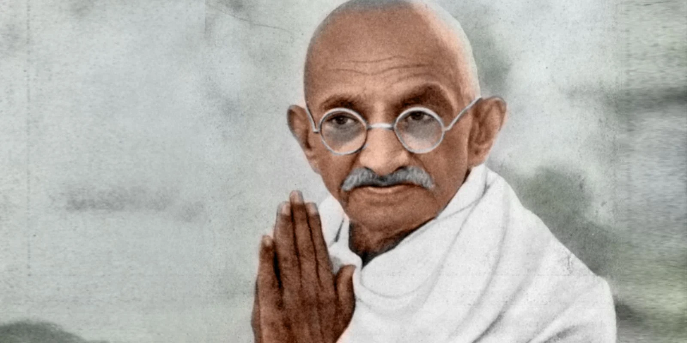
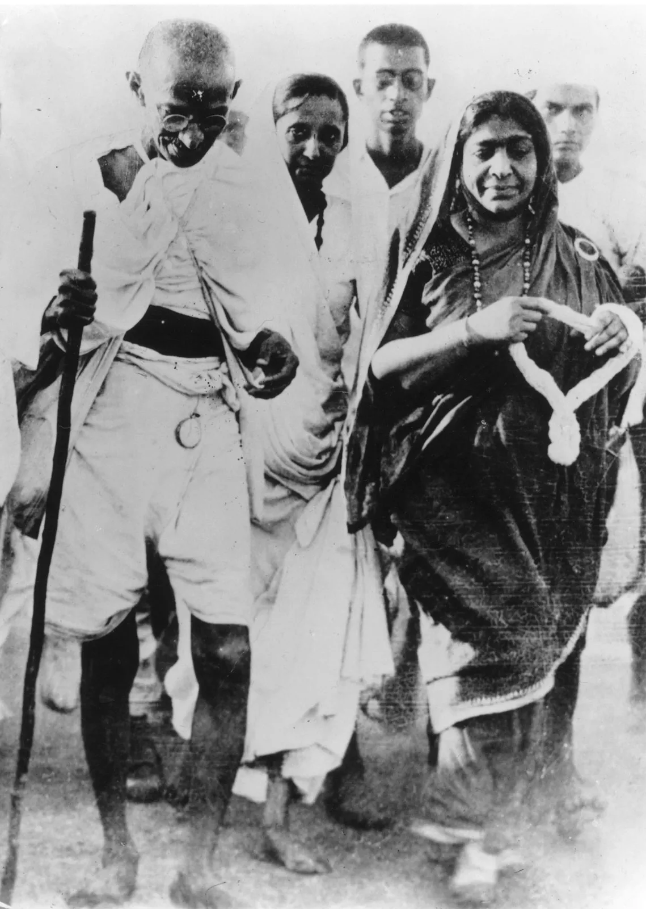

Contributions to Society
Gandhi's most powerful contribution to society was proving that an entire empire could be challenged — and defeated — without a single weapon. By leading India's nonviolent independence movement, he freed over 300 million people from nearly two centuries of British colonial rule.
His philosophy of Satyagraha — truth-force — gave the world a new framework for resistance. Rather than matching oppression with violence, Gandhi showed that moral pressure, civil disobedience, and collective sacrifice could be more powerful than armies.
This idea did not stay in India. It traveled across oceans and decades, inspiring movements for justice on every continent.

Influence on American Culture
Gandhi's most direct influence on America came through Dr. Martin Luther King Jr. In the 1950s and 60s, King studied Gandhi's philosophy intensively and traveled to India to learn from his followers. He directly credited Gandhi as the model and inspiration for the American Civil Rights Movement.
The tactics Gandhi pioneered — peaceful marches, sit-ins, boycotts, and strategic noncooperation — became the backbone of the Civil Rights struggle. Without Gandhi, the movement King led would have looked fundamentally different. His impact on racial equality, justice, and peaceful protest in the United States cannot be overstated.
“ Christ gave us the goals and Mahatma Gandhi the tactics. — Dr. Martin Luther King Jr.
Key Contributions
| Contribution | Date | Impact on America & the World |
|---|---|---|
| Developed Satyagraha | 1906 | Provided the philosophical foundation for peaceful protest worldwide, including the U.S. Civil Rights Movement |
| Led the Salt March | 1930 | Demonstrated that mass civil disobedience could defeat colonial authority; became a model for American protest strategy |
| Negotiated Indian Independence | 1947 | Proved that colonized peoples could achieve freedom peacefully, inspiring independence movements globally |
| Inspired Martin Luther King Jr. | 1950s–60s | King's direct adoption of Gandhi's tactics transformed America — leading to the Civil Rights Act of 1964 |
| Inspired Nelson Mandela | 1960s–90s | Gandhi's methods shaped Mandela's anti-apartheid strategy, ending institutionalized racial segregation in South Africa |
| Global symbol of peace | Ongoing | Gandhi's image and philosophy continue to inspire protest movements, diplomats, and activists around the world |
Sources
Lasting Legacy
Gandhi is universally recognized as the symbol of peace and nonviolence. Helping India gain independence in 1947 was only the beginning. Every major peaceful protest movement since — from the American Civil Rights struggle to the anti-apartheid movement in South Africa to pro-democracy movements across Asia and Eastern Europe — has drawn from the well Gandhi dug.
His face appears in classrooms, his quotes in speeches, his methods in strategy rooms. He proved something the world needed to hear: that the most powerful force in human history isn't a weapon — it's a will.
Sources
Read Gandhi's personal story or explore the challenges he overcame to create this legacy.